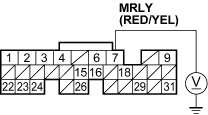
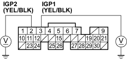
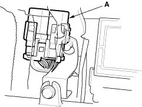
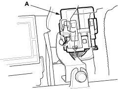
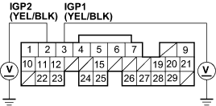

- Measure voltage between ECM connector terminal E7 and body ground.
ECM CONNECTOR E (31P)

Wire side of female terminals
Is there battery voltage?
YES - Go to step 13.
NO - Substitute a known-good ECM and recheck (see page 11-5). If symptom/indication goes away, replace the original ECM. 
- Disconnect ECM connector A (31P).
- Measure voltage between body ground and ECM connector terminals A3 and A2 individually.
ECM CONNECTOR A (31P)

Wire side of female terminals
Is there battery voltage?
YES - Go to step 15.
NO - Substitute a known-good ECM and recheck (see page 11-5). If symptom/indication goes away, replace the original ECM.

- Remove the glove box.
- Remove the PGM-FI main relay 1 (A).
LHD model:

RHD model:

- Measure voltage between body ground and ECM connector terminals A3 and A2 individually.
ECM CONNECTOR A (31P)

Wire side of female terminals
Is there battery voltage?
YES - Repair short to power in the wire between the ECM (A2,A3) and the PGM-FI main relay 1.
NO - Replace the PGM-FI main relay 1.